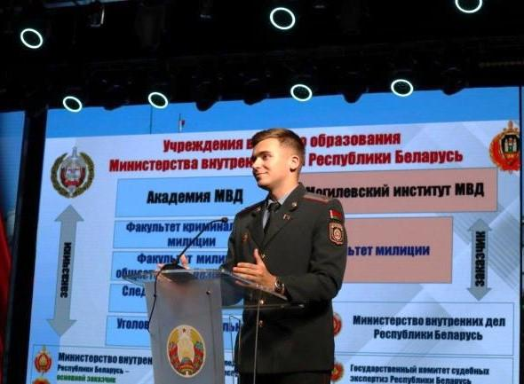
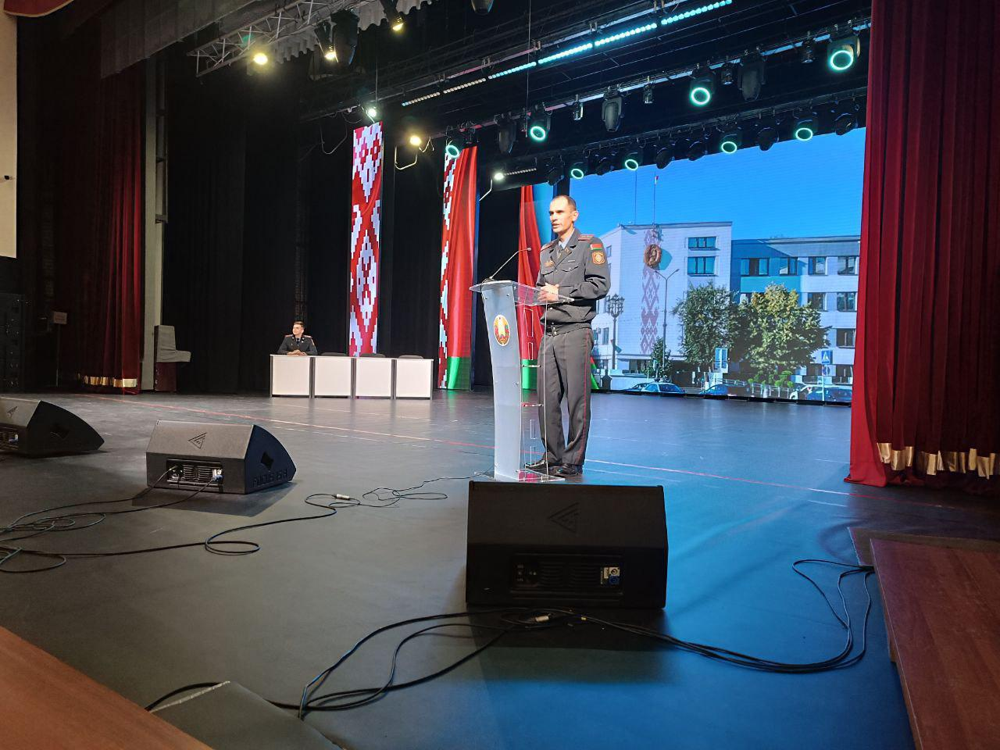
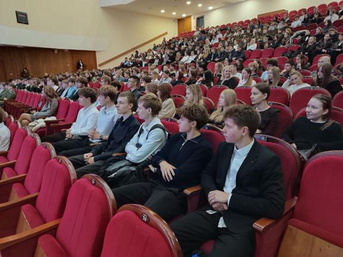
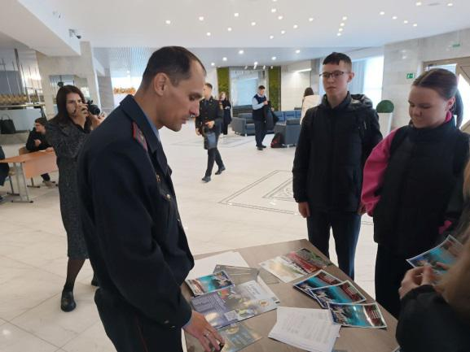

ВЫБИРАЕМ ПРОФЕССИЮ
30 сентября учащиеся 10–11 классов Государственного учреждения образования «Гимназия №1 г. Борисова» приняли участие в диалоговой площадке, посвященной вопросам поступления в ведомственные высшие учебные заведения системы Министерства внутренних дел Республики Беларусь. Спикером мероприятия, которое проходило на базе Государственного учреждения «Дворец культуры им. М. Горького», выступил старший инспектор группы кадров Борисовского РУВД майор милиции Игорь Альшевский. В своем выступлении Игорь Леонидович отметил, что ребята выпускных классов стоят перед своим первым в жизни серьёзным выбором. Меньше года осталось, чтобы определиться, какая из профессий принесет не только материальный достаток, но и моральное удовлетворение. Задача взрослых на данном этапе — вооружить будущих абитуриентов полной и достоверной информацией о той или иной профессии.


Подробно об учебе в Академии МВД и Могилевском институте МВД и перспективах дальнейшей службы рассказал начальник центра культурно-воспитательной работы академии старший лейтенант милиции Егор Стальмаков. К слову сказать, выпускник борисовской школы, будучи курсантом, стал первым вице-мистером студенчества Беларуси в 2023 году.

Он довел основные требования к кандидатам для поступления, проходные баллы, условия проживания, быта и досуга, порядок распределения по окончанию ВУЗов. Для наглядности учащимся был продемонстрирован мотивационный ролик о повседневной жизнедеятельности курсантов.

В завершение офицеры ответили учащимся на все возникшие у них вопросы и раздали буклеты об учебных заведениях.